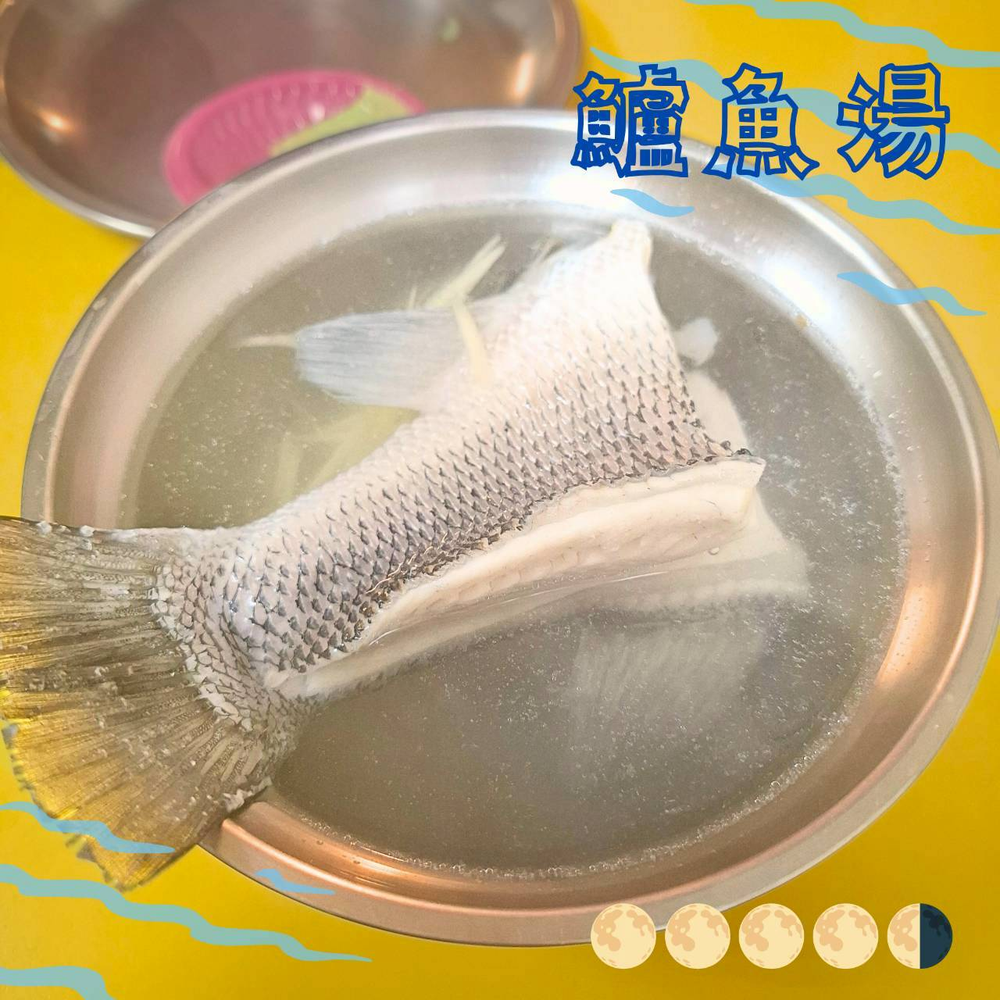
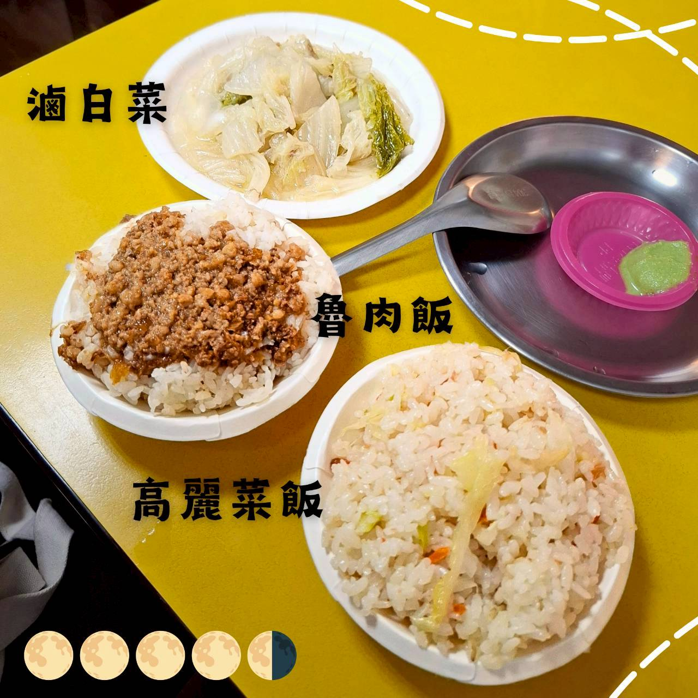

萬華鱸魚湯
1️⃣ 基本資料
- 餐廳名稱：萬華鱸魚湯
- 地點：台北市萬華區三水街78號（龍山寺廣場周遭）
- 價位區間：NT$100–200
- 營業時段：08:30–19:00
- 是否需訂位：不需要，午晚餐時段內用可能需要等待。
2️⃣ 餐廳飲食類型與整體環境
餐廳飲食類型：台式鮮魚湯與滷肉飯、高麗菜飯等家常小吃。
目標客群：在地居民、旅人、想吃平價魚湯的人。
總體環境氣氛：店內環境整齊但稍顯狹窄。位於路口三角窗區域，有兩個門可以出入。
3️⃣ 餐點評價
✨️ 鱸魚湯
可以自行選擇鱸魚的部位，有頭中尾三個選項。湯底使用薑絲調味，味道清淡鮮甜。魚肉也是新鮮的，沒有奇怪的魚腥味，肉質緊實但不過老。總體而言，非常推薦。

✨️ 虎皮石斑湯
與鱸魚湯做法相同，肉質更扎實。（忘記拍照了）。
✨️ 魯肉飯
最令人驚訝的一道，表面上是家常樣式的魯肉飯，沒有外面名店那種深邃濃郁的樣子，以為會很普通。吃了一口，哇！！魯肉飯的滋味非常好，非常推薦！！

✨️ 高麗菜飯 & 滷白菜
高麗菜飯中規中矩，調味得宜；滷白菜表現平實，無特別驚艷之處。
4️⃣ 觀點與總結
豌豆的觀點：從肉質就能感覺魚肉的新鮮，湯頭清甜爽口，僅僅使用薑絲點綴。暖暖的冬天喝一碗覺得對身體很好。
🐸 波蛙的觀點：最推薦點的就是鮮魚湯跟滷肉飯了。冬天冷冷的喝一碗魚湯真的很暖，搭配好吃的滷肉飯，一整天的能量就有了。
🌟 評分
口味評分 0–5 分：4.5
回訪意願度 0–5 分：4.5
#萬華鱸魚湯 #鱸魚湯 #虎皮石斑湯 #魯肉飯 #高麗菜飯 #滷白菜 #萬華美食 #台北美食 #龍山寺捷運站 #一球情侶台北吃喝